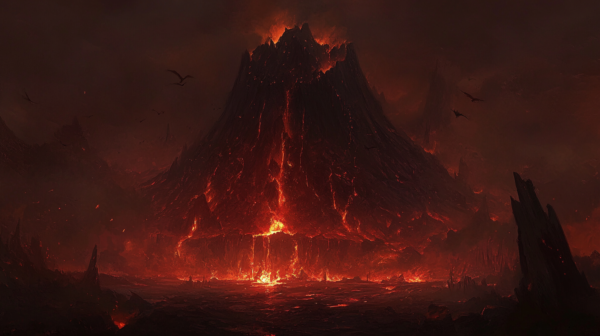

Le Cadre de Campagne : Les 700 Îles
Contexte Historique
Un grand archipel inexploré, les 700 Îles, a été découvert par les Navigateurs de l’Ancien Monde il y a quelques siècles. Les premières Traversées furent périlleuses, et de nombreuses expéditions échouèrent face aux dangers de l'archipel. Cependant, les Champions réussirent à établir des monastères fortifiés et des avant-postes commerciaux.
Aujourd’hui, alors que l’Ancien Monde est dévasté par la discorde, la famine et la guerre, de nombreux colons se tournent vers le Nouveau Monde en quête de paix ou de richesse. Depuis un siècle, les Traversées amènent régulièrement des colons désireux d’explorer et d’habiter les îles.
La Légende de la Bataille Primordiale
La légende raconte que l’archipel des 700 Îles fut formé lors d’une bataille titanesque entre dragons et géants. Les cadavres de ces puissants êtres se sont transformés en îles, certaines se perdant dans les abysses. Il est dit que cette bataille est vouée à se reproduire, lorsque les dragons et les géants se réveilleront à nouveau, annonçant une apocalypse cyclique.

L'Île de Zarathar
Géographie et Environnement
Zarathar fut la première île colonisée, nommée en l’honneur de la princesse Zara de l’Ancien Monde. Cette île est rocailleuse et inhospitalière, à l’exception de son littoral fertile grâce aux cendres volcaniques. Au nord de l’île se dresse le Zarroktharn, un volcan en activité permanente, signifiant « Celui qui ne dort jamais » en langue draconique. Ironiquement, un dragon rouge y réside, mais il passe son temps à dormir.
Zarathar est également connue sous le surnom de l’Île aux 1000 chants d’oiseaux, en raison de son impressionnante population avienne.
Villes et Communautés
-
Aquila : La première ville de Zarathar, nommée en l’honneur des Aigles, les Champions qui organisèrent la Première Traversée. Aquila fut construite sur les ruines du monastère fortifié des Champions. Aujourd’hui, elle est gouvernée par le Conseil des 9 Masques, constitué de neuf personnalités anonymes.
-
Mélone : L’autre grande communauté de Zarathar, sous le contrôle des Symphonistes Abyssaux.
Ressources et Économie
-
Ressources naturelles : Zarathar est riche en poissons, légumes, obsidienne et gemmes draconiques.
-
Chantier naval : Un chantier naval a été développé avec l’aide des Pirates des Brumes, permettant à Zarathar de se doter d’une flotte de navires.
-
Exportations : Aquila exporte principalement du poisson séché.
-
Les Mines de Fer : Les Nains d’Aquila, sentant qu'ils sont peu appréciés, ont fondé leur propre colonie dans les collines et ont commencé à exploiter avec succès des mines de fer.
Faune Aviaire
-
Les Oiseaux : Zarathar abrite une race de faucons facilement apprivoisables, particulièrement doués pour la chasse.
-
Les Griffons : Montures des Champions, des Griffons ont été importés de l’Ancien Monde pour renforcer les défenses de l’île.
Légendes et Mystères de Zarathar
Lieux Légendaires
-
La Forge de Zarroktharn : Une forge légendaire construite par les Géants sur les bords du volcan. On dit qu'elle détient des secrets de fabrication incroyables.
-
La Femme Qui Crie : Sur une île à l’est de Zarathar, vit une femme tourmentée qui pétrifie de son cri ceux qui osent s’approcher de son repaire.
-
La Pyramide : Située dans la jungle hostile de l’est de l’île, au-delà de la Grande Faille, se trouve une pyramide mystérieuse. Pour traverser la Faille, un pont apparaît uniquement lors d’occasions exceptionnelles.
-
La Tour Qui Bouge : Une tour mystérieuse sur un îlot rocheux au sud de Zarathar, émettant une aura magique qui nuit à toute forme de vie. L'île de la tour se déplacerait.
Personnages Légendaires et Enigmes
-
Évelyne : Charismatique descendante d’un des Champions fondateurs d’Aquila. Elle a organisé une expédition pour conquérir les forges légendaires du volcan, financée par la Guilde des Artificiers. L’expédition fut un échec, et Évelyne a disparu, laissant les survivants marqués par leur expérience.
-
Les 3 Sorcières Géantes : Albertine (qui ne voit pas), Joséphine (qui n’entend pas) et Ludivine (qui ne parle pas) résident sur une île au large de Zarathar. Elles possèdent des dons de voyance et ont proposé d’aider contre la malédiction du Shaman Pourpre, mais à un prix élevé.
-
Fwouin le Parcheminé : Un homme-chat érudit de l’Ancien Monde, récemment arrivé à Aquila, cherchant la Bibliothèque Souterraine censée exister sous les ruines de la ville.
Événements Mystérieux et Présages
-
Les Mauvais Présages : La migration des oiseaux est tardive, les femmes ne font plus d’enfants, les enfants meurent de maladies étranges, et les colons sont agités la nuit par de terribles cauchemars. La rumeur impute ces maux au Shaman Pourpre, chef spirituel des Draconides de Zarroktharn.
-
Le Sextant : Un outil de navigation mystérieux, fabriqué dans un métal inconnu, provenant du cœur du Nouveau Monde. Les Artificiers enquêtent sur ses fonctions et sa réparation.
-
Un bateau disparu : Un bateau de pêcheurs a disparu dans le brouillard au nord de l’île. Son épave a été retrouvée au sud, soulevant de nombreuses questions.
-
La Fête des Moissons : Une fête célébrant les récoltes, perturbée cette année par les présages inquiétants.
Les Dangers de l’Archipel
Brouillards et Navigation Périlleuse
Naviguer entre les îles est difficile en raison des récifs, des monstres marins, des animaux féroces, et des esprits qui hantent les eaux. Les brouillards maritimes sont particulièrement dangereux ; il est dit que si le brouillard devient trop dense, on risque de disparaître dans un autre monde. Les voyageurs expérimentés emportent toujours un Chasse-Brouillard.
Les Dangers de la Nuit
La nuit, les esprits des morts remontent des Abysses pour hanter les rêves et les cauchem
ars des vivants. Les gemmes de protection sont essentielles pour se protéger de ces esprits, sans quoi on risque de sombrer dans la folie et de devenir Possédé.
Les Abysses
Les abysses entre les îles sont habités par des créatures terrifiantes, peut-être les âmes des anciens géants et dragons errant dans les profondeurs sous forme de spectres. Ces créatures cherchent à trouver le repos ou à reprendre vie.
Relations et Conflits
Les Factions
-
Le Conseil des 9 Masques d’Aquila : Un des masques a pris l’initiative d’une expédition contre les pirates sans consulter les autres. Cependant, un accord a été trouvé avec les Pirates des Brumes, qui épargnent les navires en échange d’une taxe.
-
Les Pirates des Brumes : Contrôlant l’Île du Crâne, ils ont développé une relation commerciale avec Aquila, en échange d'une certaine autonomie.
-
Les Draconides : Un Draconide émissaire d’une autre île est arrivé à Aquila, demandant de l’aide contre des Géants du Feu qui attaquent son peuple.
-
Les Artificiers : Un vieil artificier a confessé avoir volé les gemmes sacrées des Draconides, provoquant la colère du Shaman Pourpre. La Guilde des Artificiers enquête également sur le mystérieux Sextant.
Population et Société
La Population
-
Vague de colons : Récemment, une vague de colons a atteint Aquila, fuyant les guerres et la famine de l’Ancien Monde.
-
Les Nains d’Aquila : Ayant fondé leur propre colonie dans les collines pour exploiter les mines de fer, les Nains se sentent peu appréciés par les dirigeants d’Aquila.